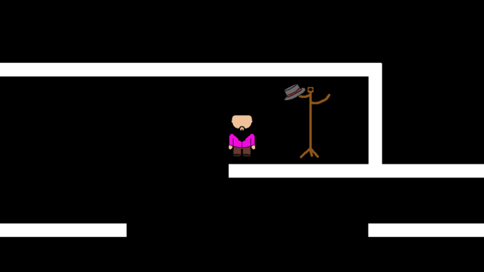

The gameplay was you are a character that is stuck in a maze without any knowledge of what is going on.
As you walk around you can find items like a hat and a shield. These items are meant to be picked up even
though it’s not clear why they are there. As you walk around you will find out what to do with the items
you find, and you will find new people to help you find everything. These people are a small character
and a character that breaks through certain walls. Switching characters is done by clicking on the
character you want to become.
Het spel was dat je een karakter was die vast zat in een doolhof. Je weet niet wat er aan de hand is.
Als je rond loopt kan je spullen vinden zoals een hoed en een schild. De bedoeling is dat je die dingen opraapt
zonder te weten wat je ermee moet doen. als je steeds verder doorloopt vind je het nut van de
opgeraapte spullen en mensen die je kunnen helpen. Het eerste persoon dat je tegenkomt is een kleine man,
waarmee je door smalle gangen kan, en de andere is een karakter die door specifieke muren heen kan.
Je kan tussen deze karakters wisselen door op ze te klikken.